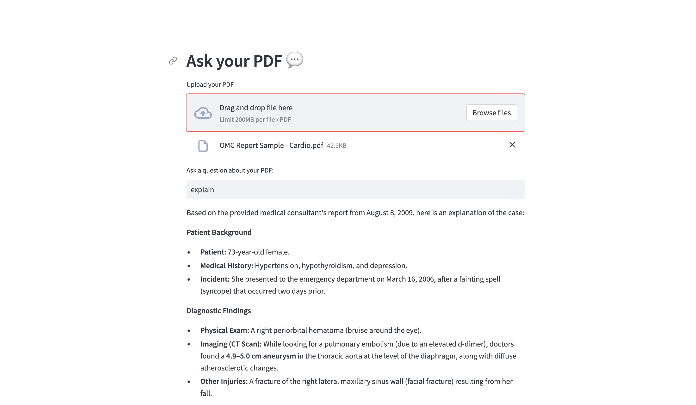
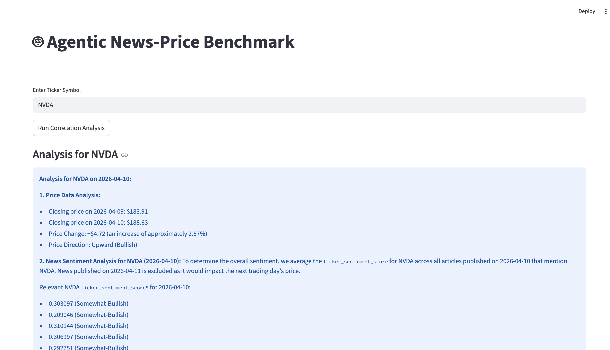
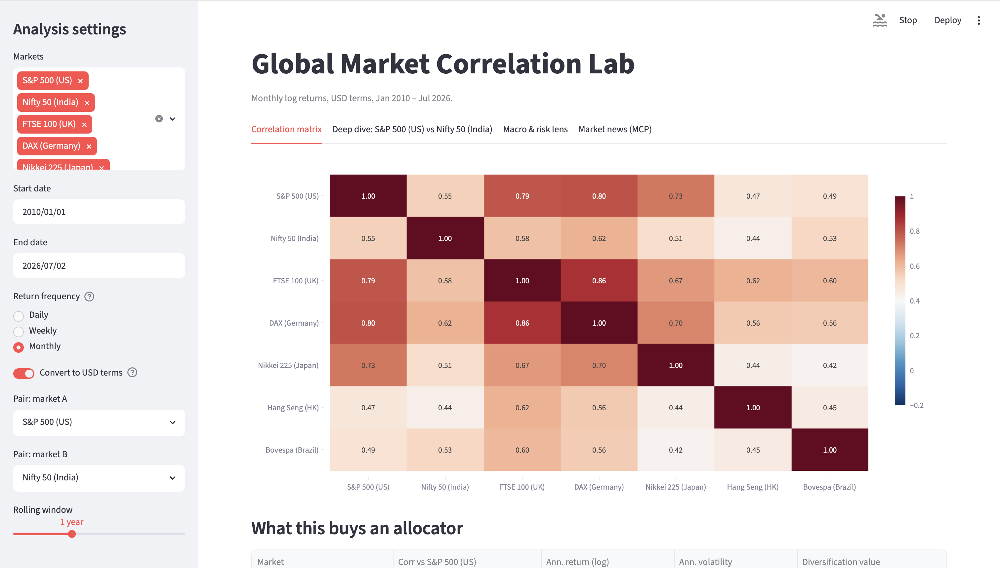

Amazon · SDE2, Alexa Shopping
▹ Building reliable, automated systems and AI-powered tooling that keep large-scale order processing running smoothly.
Hi, my name is
I build distributed systems.
Software Engineer with 5+ years of experience building reliable, large-scale distributed systems, from governance-as-code automation at Amazon to low-latency trading infrastructure and LLM-powered agentic tools. Currently based in Seattle, WA.
Comfortable across the stack (C++, Java, Python, C#/.NET, Go) and across clouds (AWS, Azure), with a track record as a founding engineer taking products from zero to one while mentoring engineers on distributed systems fundamentals. Currently building agentic tooling on the Model Context Protocol at Amazon.
$ cat about.json
{
"location": "Seattle, WA",
"experience": "5+ years",
"focus": "Distributed Systems
+ AI Tooling",
"education": "M.S., UW-Madison"
}
$ _
▹ Building reliable, automated systems and AI-powered tooling that keep large-scale order processing running smoothly.
▹ Built performance-focused telemetry and AI-powered tooling for a cybersecurity risk assistant product.
▹ Modernized and scaled a real-time trading platform's infrastructure and services.
▹ Built low-level device software and backend services for Alexa and global merchant integrations.
Levels are self-assessed estimates — adjust freely.

High-velocity RAG engine for sub-second document Q&A: FAISS vector search over Gemini embeddings, LangChain orchestration, and pypdf parsing for grounded answers over any PDF.

Agentic financial intelligence dashboard that correlates news sentiment with real-time market price movements using an LLM agent over MCP.

Streamlit dashboard analyzing correlation regimes between developed and emerging equity markets (US vs. India) across asset allocation, rates, inflation, and risk factors.
Multithreaded limit order book and trading engine for HFT: processes buy/sell/cancel orders with FIFO price-priority matching, achieving ~23,000 executions/sec.
Minimal URL shortener service: embedded Jetty HTTP server, Dagger 2 dependency injection, and counter-based Base62 encoding for short codes.
High-availability ordering platform on Azure using a microservices approach with .NET and GraphQL; data layer built on Cosmos DB (Gremlin API) and Blob Storage, with auto-scaling and load-balanced VMs for resilience.
Currently open to interesting conversations about distributed systems, AI tooling, or anything in between. My inbox is always open.
Say Hello